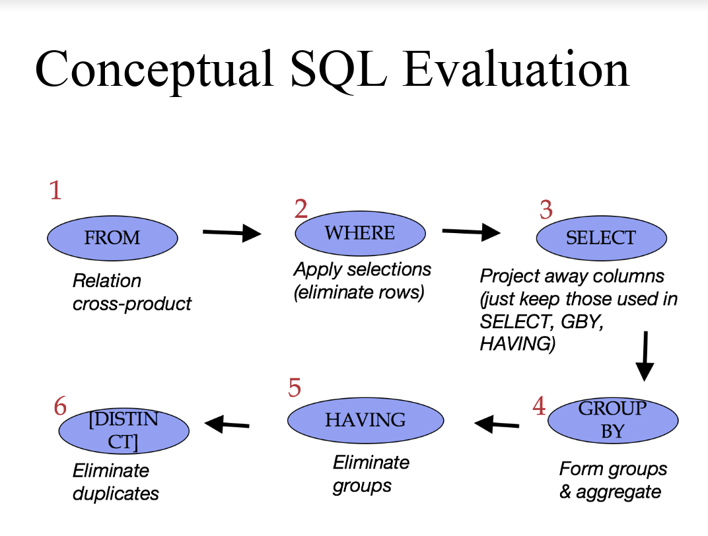
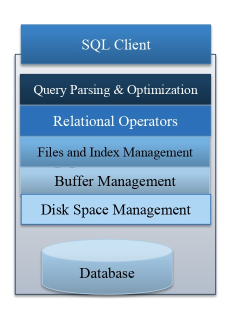
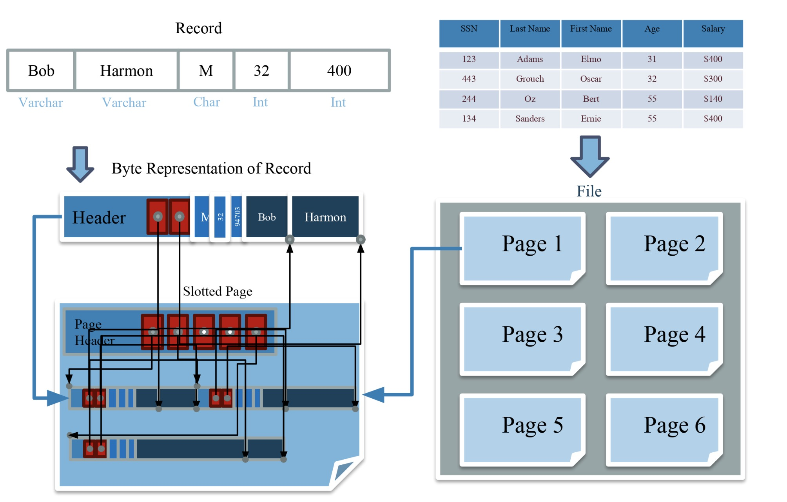

数据库基础
Relation terminology
1. Database: set of named Relations
2. Relations(Table):
- Schema: description(“metadata”), unique attribute names, atomic types
- Instance: set of data satisfying the schema, often change
3. Attribute(column, field)
4. Tuple(record, row)
SQL language
1.Two sublanguages:
- DDL: Data definition language, define and modify schema;
- DML: Data manipulation language, queries can be written intuitively(直观地);
2.SQL DDL primary key columns
- provide a unique “lookup key” for the relation
- cannot have any duplicate values
- can be made up of > 1 column
3.SQL DDL Foreign key
- Foreign key references a table , Via the primary key of that table
- Need not share the name of the referenced primary key
4.SQL DML
1 | select [distinct] <colunmn expression list> from <single table> |
5.SQL 解析顺序

6.Views: Named Queries
CREATE VIEW view_name AS select_statement
- Makes development simpler
- Often used for security
- Not “materialized”
Disks and Buffers

- Parsing & Optimization：Parse, check, and verify the SQL and translate into an efficient relational query plan
- Relational Operators: Execute a dataflow by operating on records and files
- Files and Index Management: Organize tables and Records as groups of pages in a logical file
- Buffer Management: Provide the illusion of operating in memory
- Disk Space Management: Translate page requests into physical bytes on one or more device(s)
File,Page,Record format

Files: Summary
- DBMS “File” contains pages, and records within pages
- Heap files: unordered records organized with directories
- Page layouts
- Fixed-length packed and unpacked
- Variable length records in slotted pages, with intra-page reorg
- Variable length record format
- Direct access to i’th field and null values
- Catalog relations store information about relations,
- indexes and views.
- 本文链接：https://chlch.github.io/2019/09/12/SQL基础/
- 版权声明：本博客所有文章除特别声明外，均采用 CC BY-NC-SA 3.0 CN 许可协议。欢迎转载，但是请转载请注明出处哦！